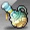
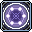

끗르
끗르
사냥 세션 타이머
타이머 종료 알림을 미리 확인합니다.
1소재
설치기 / 버프 재설치 타이머
야누스 1렙은 구체 1개, 지속시간 60초입니다. 에르다 샤워 사용을 권장합니다.

시간 : 01:00
솔 야누스
에르다 샤워
야누스 재설치 시간입니다!
에르다 샤워 재설치 시간입니다!
뽀모도로 타이머
잠수맵에 세워두고 공부나 작업을 할 때 사용하기 좋은 집중 타이머입니다.
25:00
집중 — 방해 금지, 한 작업만
집중 0 / 4
휴식 0